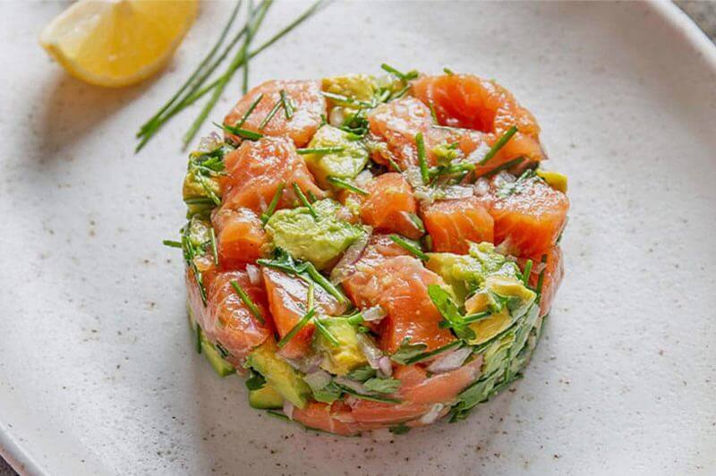

Un refrescante y delicioso tartar de salmón noruego y aguacate bien maduro

(Audio gratificante del corte de salmón:)
Ingredientes:
250 g de salmón fresco, sin piel y sin espinas, cortado en cubos pequeños
1 aguacate maduro, pelado y cortado en cubos
1 cucharada de alcaparras, escurridas y picadas
1 cucharada de cebolla roja, finamente picada
Jugo de 1 limón
2 cucharadas de aceite de oliva extra virgen
Sal y pimienta al gusto
Perejil fresco, para decorar
Tostadas o pan crujiente, para servir
Instrucciones
En un tazón, combina los cubos de salmón, aguacate, alcaparras y cebolla roja.
En un tazón pequeño, mezcla el jugo de limón, el aceite de oliva, sal y pimienta.
Vierte la mezcla de aderezo sobre los ingredientes del tazón. Delicadamente, mezcla todo con una cuchara de madera para asegurar que los sabores se integren.
Prueba y ajusta la sazón según tus preferencias.
Refrigera la mezcla durante al menos 30 minutos para permitir que los sabores se fusionen.
Al momento de servir, decora con perejil fresco y sirve el tartar de salmón con aguacate sobre tostadas o pan crujiente.
¡Listo! Este tartar es una opción fresca y deliciosa, perfecta para cualquier picoteo. ¡A disfrutar!